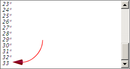
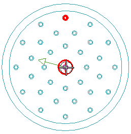

Manually assign pin 33
-
Right-click the MULTI_xxxxx node, and choose Assign Terminals.
-
In the Terminal Name box, type 33 and then 回车。
The number 33 appears at the bottom of the terminals list.

It is still a virtual port at this time.
-
Select 33 and then click Place Terminals.
-
Make sure:
Filter
=
Point
Point Method
=

-
Select the inside edge of Counterbore Hole(45).

-
Make sure the port originates at the base of the counterbored hole and points in the same direction as the other terminal ports.
If it does not, click Cycle Direction.
-
Click OK twice.
Terminal 33 appears at the bottom of the expanded multi port node.

-
点击确定。
-
Close the part.